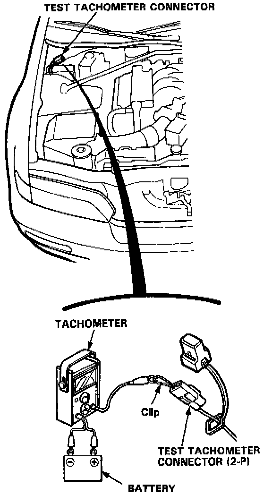

Idle Speed: Testing and Inspection
1. Start the engine and allow it to warm up (the radiator fan comes on).
2. Connect a tachometer to the test tachometer connector.
Idle speed (rpm):
650 ± 50 rpm (In Neutral)
600 ± 50 rpm (In Park or Neutral)
NOTE: All electrical systems are turned OFF.
3. Adjust the idle speed, if necessary.